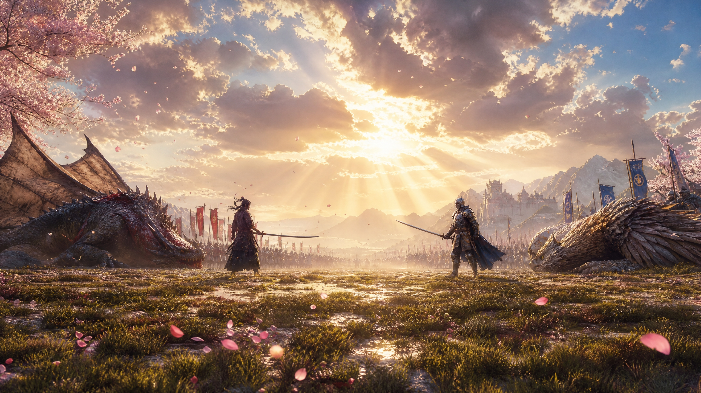
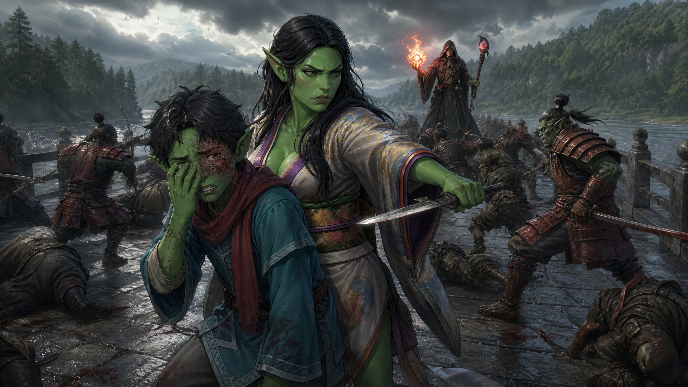

Крикс Хелон
Личное дело
- Годы жизни 1546 – 1597
- Титул Царь Царства Хелон
- Супруга Мизука Дзимму
- Верный спутник Орлан Аракс
Было время, когда Криксу предписывали великое будущее. Дворяне его хвалили, отец и мать любили своего единственного сына, а за спиной были преданные товарищи, на которых можно было положиться. Ещё будучи царевичем, Крикс обожал небо, его верный орлан «Аракс» взмывал в небо с невероятной скоростью и летал быстрее любого другого орлана. Полёт и облака для юноши были местом куда более уютным, чем заседания министров и советы по решению государственных проблем.
Битва Орла и Дракона
Однако мирное время подходило к концу. После того как «буйство некромантов» было подавлено (и унесло много жизней), последовало восстание Шики Дакэты, «Дракона юга». Восстания кланов оку были нередки, но это было совсем другим — целая провинция начала войну со своим соседом, что было сопоставимо с ударом по целостности Царства.
В это же время скончался отец Крикса, царь Маркус Хелон, и молодого царевича в срочном порядке короновали. Пока проходили процессы узаконивания, армия Шики одерживала крупные победы над карательными армиями. Южный фронт удерживал только граф Конрад Маркарн, молодой представитель дворянства, подававший большие надежды. Когда возникло опасение, что другие Даё могут присоединиться к Шики, Крикс лично возглавил армию. Поняв, куда дует ветер, другие Даё присоединились к молодому царю, чтобы подавить восстание.

Решающим событием стала битва при горе Захума, где состоялось одно из крупнейших воздушных сражений в истории Царства. 100 виверн и 70 орланов схлестнулись в небе, пока на земле в бою сошлись пехотные части.
В ходе воздушного боя Аракс смог вцепиться в горло виверны, на которой восседал Шики. Царь и бунтарь спикировали на землю, смягчив падение о кроны деревьев. Оправившись, они вступили в короткую дуэль. Шики был уже стар, Крикс молод — это была битва опыта и ловкости. Переоценив свои возможности, Шики был сражён. Примечательно, что за весь бой они ни разу не обменялись фразами, за них говорили их действия.
Аракс выжил, но потерял одну из своих лап. А голова виверны Шики была отрублена и доставлена в Ярамо. Её череп до сих пор лежит в бывшем царском саду при дворце, напоминая о той битве. (В будущем именно это место навестит Дакэта Кай перед заседанием совета регентов).
Восстание было подавлено. Старший сын Шики поклялся в верности молодому царю, и клан смог сохранить своё существование, хоть и утратил впоследствии свою репутацию. Эта битва стала примером для всех: новый царь Крикс не слаб, и с ним нужно считаться.
Мизука Дзимму и Великий Союз
О свадьбе Крикса долго ходили сплетни: ему был 21 год, а он никак не находил себе жену. Многие боялись, что он останется без наследника и род Хелона падет, подобно тому, как пал император Кутха Дзимму, последний правитель Империи Ортус.
Но Крикс выбрал себе жену едва ли не сразу после подавления восстания. Его избранницей стала Мизука Дзимму — последняя из своего рода, последняя, в ком ещё текла кровь исконных правителей на полуострове. Выбор был обоснован: свадьба навсегда бы укрепила единство между двумя враждующими расами; она была его подругой детства, он знал, насколько она мудра; она была чертовски привлекательна. К тому же, клан Дакэта, за наследника которого её хотели выдать замуж, был заклеймён и опозорен, и помолвку отменили.
Потребовалось почти 3 года, чтобы Крикс смог договориться с родителями Мидзуки, главами её клана, а параллельно усмирять недовольных советников из числа людей, которые считали этот выбор неправильным. Решающим условием было согласие самой Мидзуки, которая первое время не была уверена. Но для молодого царя ухаживания за любимой женщиной были самой приятной частью. Ведь она не отказывалась от встреч, смеялась с его шуток и беспокоилась, когда он покидал столицу.
Возможно, помилование клана Дакэта было даже не спонтанным решением, а верным политическим ходом: мать Мидзуки была из побочной ветви этого клана, и, скорее всего, не согласилась бы на брак, уничтожь Крикс весь род. В итоге, в 1568 году состоялась свадьба, которая заставила многих понервничать. Союз царя династии Хелона и наследницы императорского рода Дзимму мог всё изменить.
Трагедия на мосту
За пятнадцать лет до смерти Крикса в его жизни случилась катастрофа, правду о которой не раскрыли до сих пор. Погибли царица Мизука и их единственный сын.
Летописи тех лет гласили: торговый караван, следовавший из Ярамо на запад через деревню Намина, подойдя к мосту через реку, наткнулся на следы битвы. Повсюду лежали тела убитых мураев и бандитов, на камнях и деревьях чернели следы огня. Магия явно применялась.
Среди погибших караванщики узнали царицу Мидзуку Хелон. Её тело было изранено, одежда обожжена. Погибших воинов и царицу доставили в Ярамо.
Крикс, вернувшийся с охоты и ожидавший возвращения жены с сыном, встретил настоящий кошмар.
Карательная кампания
Охваченный яростью, царь разослал гонцов во все провинции с приказом усилить дозоры и заставы. Сам же повёл карательную армию из Ярамо. Приказов было два: найти тело принца — если тот упал в реку, и истребить все бандитские шайки.
Несколько недель леса и города захлёбывались в крови. Горели бандитские базы, отряды шли от поселения к поселению. Наездники на орланах с неба видели, как леса от Ярамо до северных земель усеивали столбы чёрного дыма.
Падение рода дзимму
Загородное поместье клана Дзимму, куда держала путь царица с принцем, было разорено. Стены штурмовали с лестниц, ворота пробили тараном. Следы тяжёлой битвы оставались повсюду.
Главу рода нашли у входа — в его теле торчало с десяток копий. Хозяйку нашли внутри, осквернённой и с перерезанным горлом.
Род Дзимму перестал существовать как клан. Потомки по древним бракам ещё оставались, но их кровь уже не принадлежала императорскому роду. Так наступило забвение.
Судьба принца
Магов допрашивали с особым пристрастием. Каждого подозрительного задерживали. Но тело принца так и не нашли.
Крикс верил, что сын жив и его держат в заложниках. Однако никто не выдвинул условий.
В назидание царь приказал распять каждого пленённого бандита. Цепочка распятых тел тянулась вдоль тракта из Ярамо до города Хинодэ. Главарей банд сожгли публично.
Крикс провозгласил:
Сожжение было личной местью. Он видел обожжённое пламенем тело жены и не желал думать, что могли сделать с сыном.
После трагедии
Прошёл год, два, три, пять. Вестей не было. Крикс не смог жениться во второй раз. Его дочь от наложницы умерла через год после гибели Мидзуки.
Весёлые детские голоса исчезли из дворцовых коридоров. Шум и гам сменились шёпотом и глухими шагами.
Крикс учредил совет десяти пальцев, который позже стал Советом Регентов. Сам же он медленно увядал, не заботясь о судьбе государства после себя.
События того самого дня
— Мама, смотри! Река! Мы скоро приедем к бабушке с дедушкой! — радовался юный оку.
— Ха-ха, да, милый, — улыбалась Мизука.
Небо медленно затягивали тучи. Стража усиливала бдительность: переправа через мост считалась опасной.
Когда карета заехала на мост, на противоположной стороне появился отряд неизвестных, а перед ними стоял человек в мантии.
— Госпожа, будьте готовы бежать! — крикнул капитан стражи.
Но путь назад уже был отрезан: за спиной появился ещё один отряд.
Карета оказалась между двух огней. Стражники обнажили мечи.
— Госпожа, вам лучше покинуть карету! — крикнул капитан.
Мизука с принцем вышли наружу. И тут же в карету влетел огненный шар. Карета вспыхнула и разлетелась на куски.
Маг дал сигнал. Началась резня.
Мизука вытащила кинжал из ножен погибшего воина и приготовилась защищать ребёнка.
Бой длился недолго. Маг по очереди метал молнии и пламя, пробивая защитное построение. Один из огненных ударов попал в лицо принца.
— А-а-а! — закричал он от боли.

Мизука оторвала кусок ткани от кимоно и прижала к его лицу. Ожог был чудовищным.
Царица попыталась добраться до мага, но её пронзили два клинка — в спину и в живот.
Принц кричал, умолял прекратить, но его не слушали.
Он видел, как маг создал клубок пламени и метнул его в его мать.
Мальчик бросился бежать, но нападавшие играли с ним, нарочно давая ложную надежду.
Забравшись на парапет моста, он увидел лицо мага. И он узнал его.
Маг призвал очередной огненный шар и метнул в мальчика. Принц поскользнулся, пытаясь увернуться, и упал в реку.
Весенняя вода была ледяной, течение — быстрым. Слабый телом мальчик вряд ли мог выжить.
Нападавшие не стали искать его, посчитав, что природа сама сделает их работу за них.
Позже ниже по течению нашли обрывок кимоно Мидзуки, зацепившийся за кусты. Но мог ли он остаться на кустах, если мальчик не умел плавать и не знал, как выбраться?
Судьба принца по сей день мучает тех, кто искал его. Все сошлись на одном: скорее всего, он погиб, и лишь река знает, куда вынесла его тело…
Легенды и слухи
После трагедии по Хелону поползли слухи. Одни верили, что принц выжил и скрывается. Другие — что его похитили маги. Третьи не лелеяли надежд на его выживание.
Со временем историю о принце стали забывать, словно того и не было вовсе.
Многие видели в этом знак богов, род Хелонов пал со смертью Крикса и возможно, даже чудом воскресший наследник, возможно не смог бы сплотить разрозненный народ.